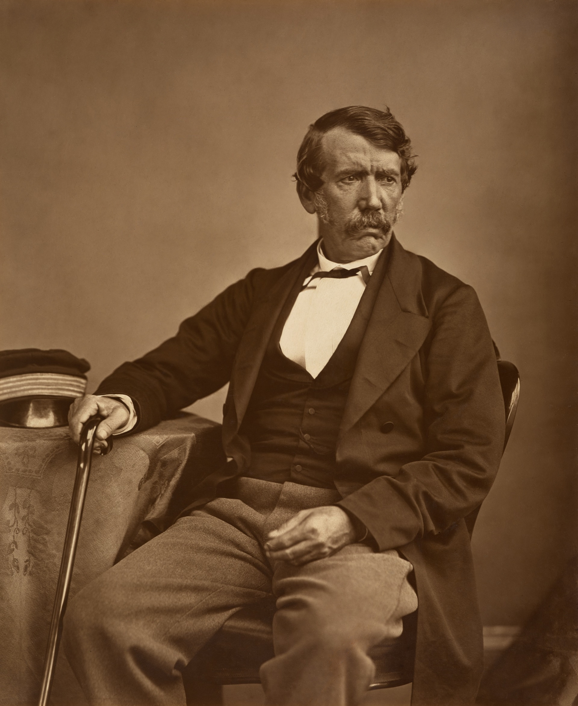
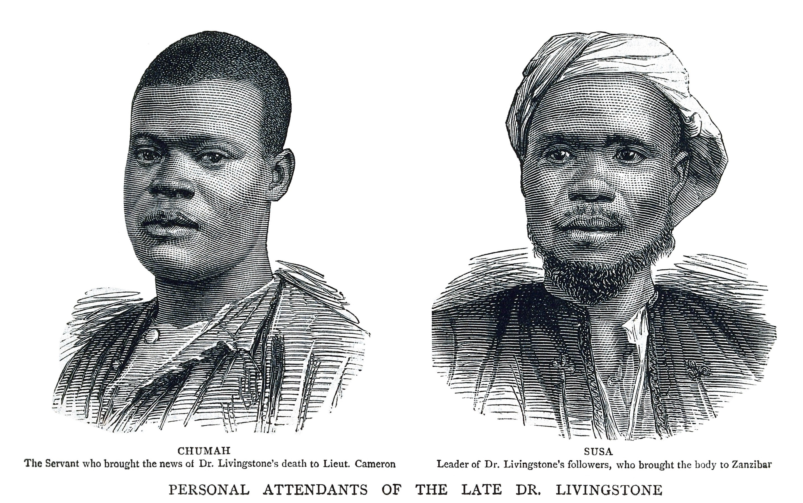
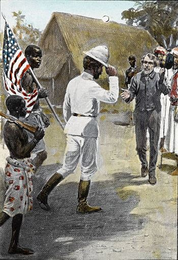

How do you map a continent’s interior without roads, telegraphs, or GPS? You walk with local guides, calibrate thermometers in boiling water to measure mountain heights, treat tropical fevers with tree bark, and witness human systems at a turning point.
Big idea: David Livingstone was the first European to cross southern Africa coast-to-coast, but every step relied on African leaders, porters, and interpreters. His field medicine pioneered systematic quinine use, and his firsthand records of the slave trade forced international abolition.
45–60 minutes · Predict → investigate → explain
Classroom route atlas · Original schematic
Trace the solid gold line for the 1852–1856 coast-to-coast crossing from Luanda to Quelimane via Mosi-oa-Tunya (Victoria Falls). The orange line traces the search for the Nile watershed around Lakes Tanganyika, Mweru, and Bangweulu. The green dashed line traces the extraordinary 1,500-mile journey led by James Chuma and Abdullah Susi carrying Livingstone’s preserved remains and field journals to the sea.
ClassroomOS original illustration. Rivers, stops, and paths are approximate educational schematics based on historical expedition records.
01 / Before the departure
What must we know first?
From cotton mill to medical missionary
Born in Blantyre, Scotland in 1813, David Livingstone began working 14-hour days in a cotton mill at age ten, reading Latin and science books propped against his spinning machine. He saved his wages to enter Anderson’s University in Glasgow, studying medicine, Greek, and theology.
Appointed by the London Missionary Society in 1840, Livingstone sailed for southern Africa. He believed European colonization was not the answer, proposing instead the combination of "Commerce, Christianity, and Civilization" to displace the devastating regional slave trade with legitimate agricultural and technological trade.
Known to whom?
Nineteenth-century European maps labeled central Africa "the Dark Continent" or left vast blank spaces. In reality, southern and central Africa were home to thriving civilizations, ancient trade corridors, and sophisticated metalworking, farming, and river navigation traditions.
The Kololo, Tonga, Yao, Chewa, and Lunda peoples knew the river bends, rapids, seasonal flooding cycles, and medicinal plants intimately. Livingstone did not "discover" rivers or waterfalls—he translated African geography into European cartographic language and coordinate grids.
The expedition was an African network of people
James Chuma and Abdullah Susi
Chuma, a freed Yao youth, and Susi, a skilled Shupanga riverman, were Livingstone’s indispensable organizers, guides, and companions for over seven years. They managed caravans, negotiated river passages, and directed medical care. When Livingstone died in 1873, their loyalty and leadership saved his legacy.
Chief Sekeletu and the Makololo porters
The Kololo ruler Sekeletu provided Livingstone with river canoes, provisions, ivory for trading, and an escort of 114 Makololo men. These porters accompanied Livingstone through hostile territory all the way to Luanda on the Atlantic and back across to Quelimane on the Indian Ocean.
Henry Morton Stanley
A reporter sent by the New York Herald in 1871 to find Livingstone after years of silence. Stanley greeted him at Ujiji with the famous line: "Dr. Livingstone, I presume?" Stanley brought lifesaving medicine and supplies, but Livingstone refused to abandon his geographic search.
Halima and caravan women
Women were essential members of African caravans, managing camp logistics, cooking, nursing the sick, and handling barter for fresh grain and fish in local marketplaces. Their daily labor kept multi-year expeditions alive across thousands of miles.

Historical Photograph · Thomas Annan, 1864
Dr. David Livingstone (1813–1873). Scottish physician, explorer, and abolitionist. Livingstone traveled light with small groups of African guides rather than armed military columns, pioneering the use of quinine to treat malaria and documenting equatorial geography.
National Portrait Gallery, London / Wikimedia Commons · Public domain.

Historical Etching · Wellcome Collection
James Chuma and Abdullah Susi. The African expedition leaders whose strategic decisions preserved Livingstone’s work. Following his death, they sun-dried his body, packed his sealed journals, compasses, and maps, and marched 1,500 miles across hostile territory to deliver them to the British consul.
Wellcome Collection, London · Public domain.

Historical Engraving · Published 1872
"Dr. Livingstone, I presume?" (November 10, 1871). Henry Morton Stanley locates the emaciated Livingstone at Ujiji on Lake Tanganyika. Stanley’s sensational reporting captured world headlines, but Livingstone chose to remain in Africa to continue investigating the continental watershed.
Illustrated London News / Wikimedia Commons · Public domain.
First action: Select each stage. Identify one geographic or medical obstacle and one African partner whose knowledge solved it.
Tip: use ← → on the keyboard while a stage button is focused.
Compare Livingstone’s expeditions: sponsors, transport, and outcomes
Kalahari & Kolobeng (1841–1852): Self-funded and missionary-supported; ox-wagons and walking. Proved the Kalahari could be crossed to Lake Ngami by following seasonal pans with San and Tswana guides.
Transcontinental Crossing (1852–1856): Supported by Chief Sekeletu and 114 Makololo companions; dugout canoes and walking. First recorded European trans-African crossing (Luanda to Quelimane); mapped Mosi-oa-Tunya.
Zambezi Expedition (1858–1864): Funded by the British government; steam launch Ma Robert. Vessel failed at Cahora Bassa rapids; shifted exploration to the Shire River and Lake Malawi (Lake Nyasa).
Central African Watershed & Nile Search (1866–1873): Supported by the Royal Geographical Society; small caravan led by Chuma, Susi, and Wainwright. Explored Lakes Tanganyika, Mweru, and Bangweulu, and the Lualaba River.
Each expedition changed in technology and funding. Where steam-powered gunboats failed against Africa’s granite gorges, small teams of experienced African foot travelers succeeded.
03 / STEAM is a set of practices
The African field toolkit
Science · Field medicine & malaria
In the 1850s, Europeans believed malaria was caused by poisonous marsh vapor or "miasma" (bad air). Livingstone observed that fevers struck after mosquito encounters in lowlands, and pioneered the daily prophylactic use of quinine (extracted from cinchona bark), creating "Livingstone’s Rouser" pills that kept his expedition mortality remarkably low.
Technology · Hypsometry & boiling water
Mercury glass barometers broke easily on rough trails. Livingstone carried precision boiling-point thermometers. Because atmospheric pressure decreases with altitude, water boils at lower temperatures at higher elevations. Measuring water’s boiling point allowed him to calculate terrain altitude and river gradients across Central Africa.
Engineering · River steamers and rapids
The British government built the paddle steamer Ma Robert out of innovative prefabricated steel plates. However, its draft was too deep for sandy shoals, its boilers consumed vast amounts of timber, and it could not pass the vertical granite cascades of Cahora Bassa. Technology designed for European waterways failed when mismatched to African hydrology.
Arts · Field diaries written in berry juice
When ink and paper ran out during his final years stranded at Manyuema, Livingstone wrote diary entries across old copies of the Standard and Bombay Gazette using clothing pigment, iron gall chemicals, and wild berry juice. These diaries are now readable using modern multi-spectral imaging.
To establish longitude in dense forests without marine chronometers, Livingstone observed occultations of Jupiter’s moons and measured the angular distance between the Moon and stars with a brass sextant. His coordinate fixes were so accurate that modern satellite cartographers verified his positions within miles.
Medical lab: malaria fevers vs. prophylactic quinine
Predict: How does taking a preventive dose of quinine change malaria parasite growth compared to waiting until high fever strikes?
Cinchona bark contains quinine, an alkaloid that inhibits the malaria parasite (Plasmodium) inside red blood cells. Livingstone showed that regular small doses kept travelers functioning.
0% safe50%100% severe
Test: Slide the dose to 300–400 mg. Notice how prophylactic coverage suppresses the fever spike. Explain: Why did empirical quinine use save lives decades before Ronald Ross discovered that mosquitoes transmit the parasite in 1897?
Engineering decision: why did the steamer fail?
The steam launch Ma Robert was hailed in London as an engineering marvel, yet it proved nearly useless on the Zambezi River. Choose the supported engineering conclusion.
04 / A strange connection between boiling water and geography
The boiling-point mystery: where does the river go?
In 1871, Livingstone reached a colossal river flowing north at Nyangwe, over a mile wide: the Lualaba. He believed with all his heart that it was the ultimate source of the Nile River, flowing north to Egypt and the Mediterranean.
How could an explorer test whether a river flows north to the Mediterranean or west to the Atlantic without following it for 2,000 miles? By boiling water!
As altitude rises, atmospheric air pressure decreases, and water boils at a lower temperature (~1°C lower for every 285 meters of altitude). Livingstone boiled water at the Lualaba and measured the temperature with his calibrated thermometer.
Hypsometer lab: calculate elevation from boiling water
The geographic shock: Lake Victoria sits at 1,134 meters above sea level; the White Nile at Gondokoro is at 450 meters. The Lualaba’s boiling point of 97.9°C revealed its elevation was only 600 meters (2,000 ft)! Water cannot flow uphill from a 600-meter river into an 1,100-meter lake. The Lualaba could not be the Nile: it was the upper Congo River!
Evidence lab: primary diaries vs. romantic myth
Select an evidence source to evaluate what it proves and what it obscures.
Archive context: Livingstone Online Multi-spectral Imaging Project. Scholars used infrared and ultraviolet illumination to recover diary text washed away by 150 years of moisture and faded berry juice.
05 / Make your case
Keep a field notebook, then question it
Draw a map sketch of Central Africa. Trace the continental divide between the Zambezi (Indian Ocean), Congo (Atlantic Ocean), and Nile (Mediterranean). Separate an observation (“the water boils at 97.9°C”) from an interpretation (“this river must flow to Alexandria”).
Core challenge
Explain how two STEAM disciplines (such as medical pharmacology and thermal hypsometry) helped solve different expedition challenges. Include one numerical calculation from the labs.
Stretch challenge
Explain why the 1,500-mile march of Chuma and Susi was a masterclass in African logistics, diplomacy, and preservation of scientific evidence. Why were their names frequently omitted from early textbooks?
History and consequences
Livingstone’s graphic descriptions of the Nyangwe slave massacre led Britain to pressure the Sultan of Zanzibar into signing the 1873 treaty closing the East African slave markets. However, decades later, European powers used Livingstone’s call for "Commerce and Civilization" as a moral pretext for the brutal colonization of Africa in the 1884 Berlin Conference. How can an explorer’s ideals be co-opted by empire?
Teacher notes and exit-ticket answers
Suggested pacing: foundations 10 min; route and stages 10 min; medicine & steamer engineering 15 min; boiling-point hypsometry 10 min; notebook reflection 10 min. At 97.9°C, water indicates an elevation of ~600 m, proving the river sits below the Nile headwaters and must flow to the Congo basin. Prophylactic quinine prevents fatal parasitemia before symptom onset. Chuma and Susi's preservation of journals preserved the scientific and human record.
Check historical claims using primary diary facsimiles at Livingstone Online. Always examine who funded an expedition, who carried the equipment, and who wrote the history.